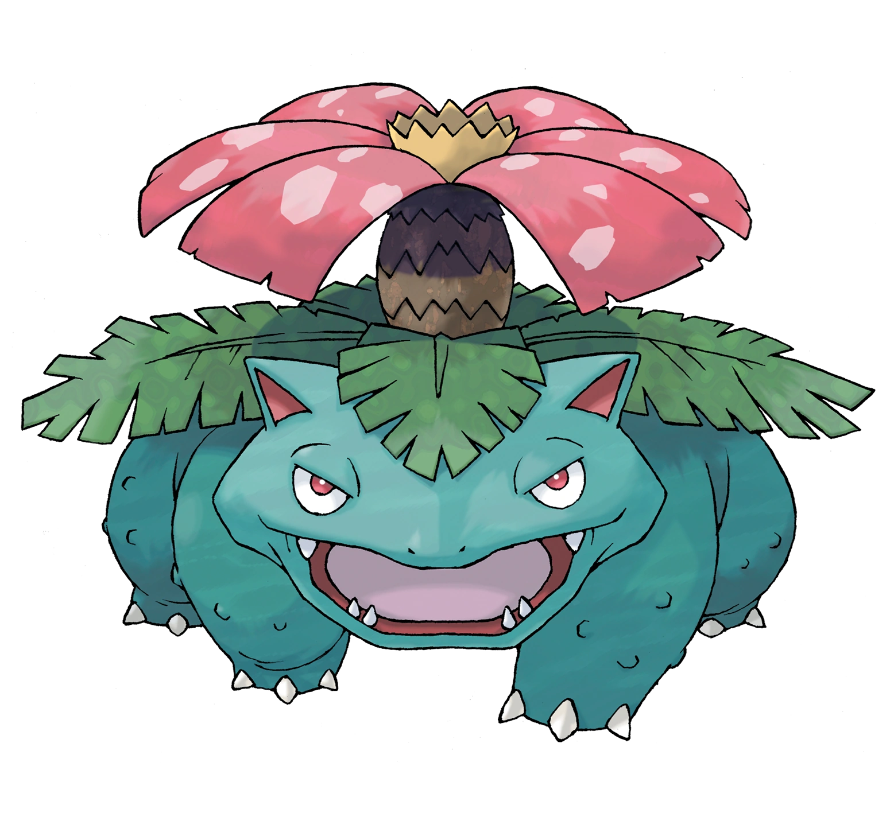
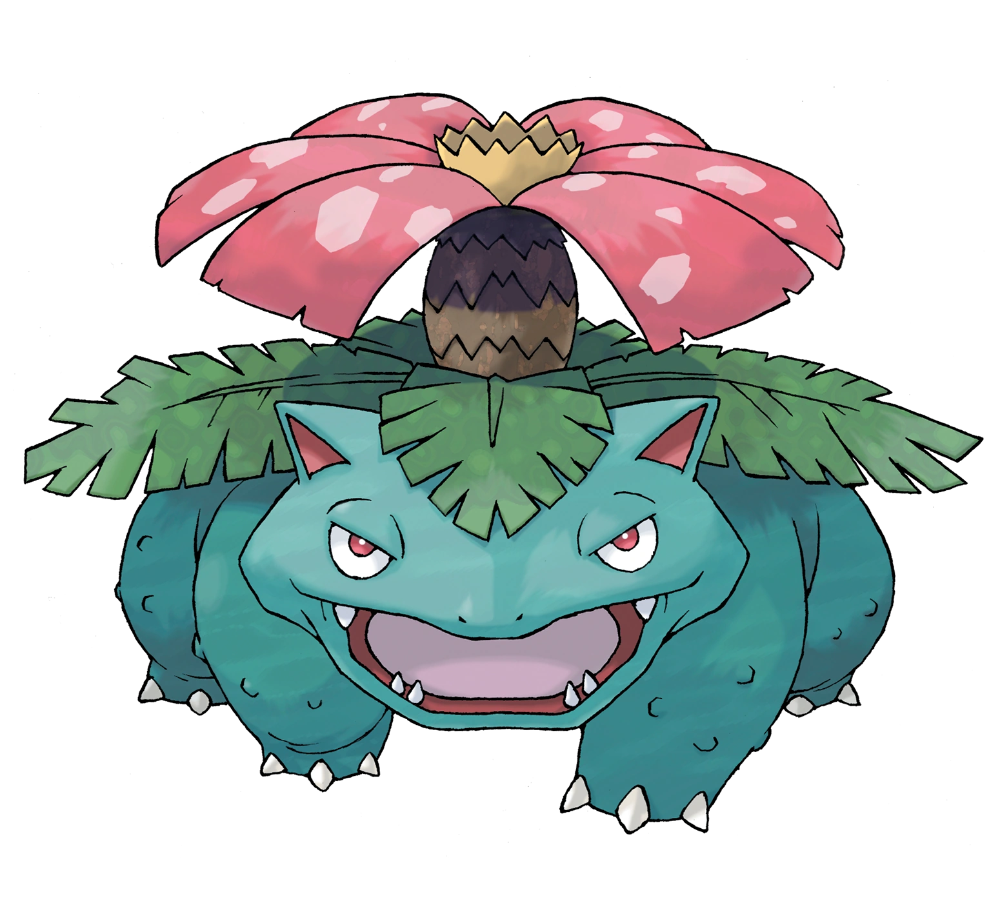
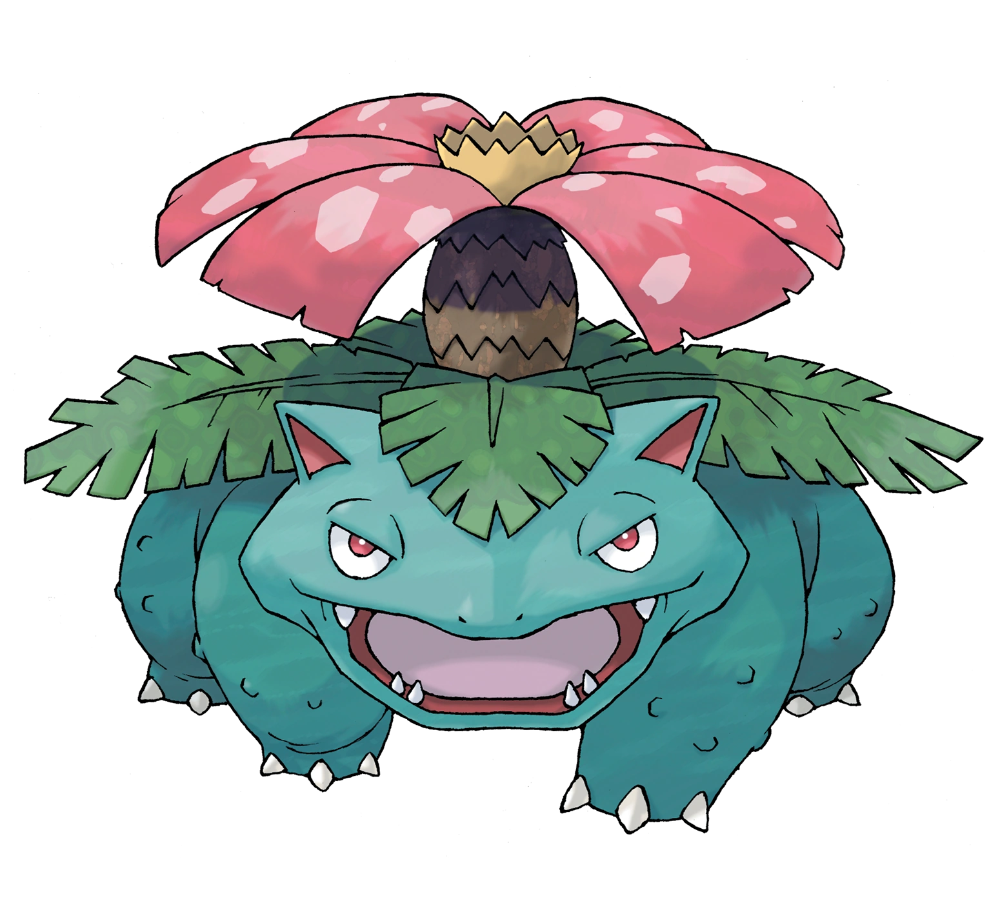

Bulbasaur es un Pokémon cuadrúpedo de color verde y manchas más oscuras de formas geométricas. Su cabeza representa cerca de un tercio de su cuerpo. Este Pokémon tiene plantado un bulbo en el lomo desde que nace. Esta semilla crece y se desarrolla a lo largo del ciclo de vida de Bulbasaur a medida que suceden sus evoluciones. El bulbo absorbe y almacena la energía solar que Bulbasaur necesita para crecer. Dicen que cuanta más luz consuma la semilla, más olor producirá cuando se abra. Por otro lado, gracias a los nutrientes que el bulbo almacena, puede pasar varios días sin comer.El bulbo de Bulbasaur le ayuda a defenderse de los enemigos y desde él puede disparar ataques tales como rayo solar y drenadoras entre otros. No es muy raro encontrarlo en jardines y zonas cercanas a fuentes de agua. También suele encontrarse en zonas boscosas profundas.
| Stat | Valor |
|---|---|
| PS | 54 |
| Ataque | 49 |
| Defensa | 65 |
| Velocidad | 45 |
| At.Especial | 65 |
| Def.Especial | 65 |
